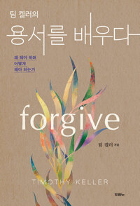

『용서를 배우다』 완독의 밤은 한 참석자의 긴 간증으로 열렸다. 제 힘으로 안 되어 포기했던 용서가 그 사람의 복을 비는 기도 끝에 불쌍히 여기는 마음으로 찾아왔다는 이야기였다. 이어 아직 안 되는 용서, 내 마음 편하자고 하는 용서의 한계, 은혜 없이는 안 되는 용서로 대화가 겹겹이 쌓였고, 바로 그날 그 자리에서 일어난 작은 화해의 장면이 책의 마지막 장을 살아 있는 결론으로 만들어 주었다. 다음 책 『예기치 못한 기쁨』을 예고하며, 용서를 결단하게 해 달라는 진행자의 기도로 닫혔다.
포기했던 용서가 이루어지기까지
첫 발언자는 오래 붙들어 온 용서의 여정을 길게 나눴다. 감정을 다른 방법으로 풀어보려 세미나와 상담까지 다녔지만 되지 않아 아예 포기했었는데, 말씀과 설교로 계속 마음을 두드리시는 하나님 앞에서 '나는 용서를 해야겠다, 도와달라'고 결단하며 기도하기 시작했다고 했다. 그런데 기도의 방향이 이상하게 바뀌더라는 것이다. 내 마음 편해지자고 하던 기도가 그 한 영혼이 하나님을 만나 복을 누리기를 바라는 축복의 기도가 되었고, 어느 날 그 사람을 보는데 안쓰럽고 불쌍히 여기는 마음이 올라와 그제야 용서가 된 줄 알았다는 간증이었다.
간증은 거기서 멈추지 않았다. 이렇게 어려운 용서를 하나님은 나에게 얼마나 오래 해오신 것인가. 크신 분이니 쉽게 하셨으리라 여겼던 그분의 용서가 실은 참고 또 참기로 작정하신 사랑이었음이 책을 읽으며 더 깊이 다가왔다고 했다. 책의 흐름을 그대로 살아낸 이야기라는 진행자의 화답으로 그날의 물꼬가 트였다.
한 사람은 되는데, 한 사람은 안 됩니다
곧바로 다른 참석자가 현재진행형의 고민을 얹었다. 어떤 사람은 이제 보며 웃을 수 있는데, 직장의 다른 한 사람은 부서가 갈라졌는데도 여전히 밉다는 것이다. 여러 사람 앞에서 자신을 투명인간 취급당했던 상처가 그 뿌리에 있었다. 진행자는 결단까지가 우리의 자리이고, 일곱 단계를 밟는다고 자동으로 완성되는 일이 아니라 그 나머지 여정은 성령께 맡겨진 것이라고 책의 결을 따라 답했다.
그러면서 진행자는 자신의 걸림돌은 결이 다르다고 고백했다. 교구 설교를 준비하며 사무엘상의 한나와 엘가나 본문을 읽다가, 힘들어하는 한나에게 '어찌하여 우느냐, 내가 열 아들보다 낫지 아니하냐'라고 말하는 엘가나에게서 자기 모습을 봤다는 것이다. 상처 때문이 아니라 '이만큼 했으면 이쯤에서 풀려야 한다'는 통제가 용서를 막더라는 성찰에, 애를 쓰는데도 원하는 반응이 돌아오지 않는 부부 사이의 이야기들이 웃음 속에 쏟아졌다.
AI가 다 해줘도 못 해주는 것
육아 이야기로 흘러간 대화를 진행자가 뜻밖의 방향으로 건져 올렸다. 아무리 애를 써도 원하는 y값이 안 나오는 함수 같은 가족 관계 속에서, 내 방식의 노력보다 상대의 결에 맞춘 사랑이 답이더라는 아빠들의 경험담이 오간 끝이었다. 진행자는 AI가 웬만한 일을 다 해주는 시대가 와도 이 사람을 만나는 일만은 대신해 주지 못한다며, 인격과 인격이 몸으로 마주하는 시간의 절대량이 앞으로 정말 중요해질 것이라고 했다. 효율의 극치를 사는 자신이 아이들과 보내는 시간마저 아까워하게 되더라는 반성, 그리고 "나중에 애들이 날 용서해 줄까"라는 농담 반 진담 반의 말로 대화는 다시 책의 주제로 돌아왔다.

내 마음 편하려는 용서, 관계 때문에 하는 용서
한 참석자는 믿지 않던 시절의 용서법을 솔직하게 꺼냈다. 용서는 결국 내 건강을 위한 것이라 여겨, 미움이 올라올 때마다 호흡과 명상으로 가라앉히며 복잡하게 살지 말자는 식이었다는 것이다. 그런데 최근 가정 안의 오래된 문제들이 수면 위로 오르며 자기 안에 용서하지 못한 것이 남아 있음을 발견했고, 예전 같으면 해결책을 수십 가지 찾아 움직였을 텐데 지금은 그저 하나님께 다 고발하며 기도로 지나고 있다고 했다. 마침 그 몇 주간 설교와 책이 온통 용서였던 것이 미리 준비시키신 것 같다는 말도 보탰다.
진행자는 예전에 가까이서 지켜본 두 목회자의 일화로 이 대목을 넓혔다. 몇 년 만에 찾아와 사과한 쪽은 정작 상대와의 관계 회복에는 관심이 없었고, 밤마다 응어리가 걸려 견딜 수 없어 온전히 자기를 위해 사과한 것이었다는 이야기다. 내 마음 편하려는 용서든 내 인생에 필요한 관계라서 하는 용서든 결국 자기를 위한 것인데, 첫 간증처럼 그 사람이 잘되기를 바라는 자리까지 가는 것은 복음 없이는 설명이 안 된다고 진행자는 짚었다. 다른 참석자도 지나온 용서들을 돌아보며 예수님 같은 용서는 아직 무리라고, 그러나 감정을 내려놓게 하신 것도 하나님이셨다고 덧붙였다.
은혜가 아니면 안 되더라
신앙의 연차가 짧다고 밝힌 한 참석자의 나눔이 방을 밝혔다. 교회에 오기 전에는 용서라는 개념 자체가 없었는데, 요셉이 형들을 용서할 수 있었던 것은 먼저 하나님의 은혜를 받았기 때문이라는 설교가 책과 겹쳐 뼈에 새겨졌다는 것이다. 가족 사이 돈 문제로 형제간에 언쟁이 있었을 때, 같은 상황을 두고 자신은 형제의 사정이 이해가 되는데 은혜를 모르는 다른 형제는 미움에 머무는 것을 보며 그 차이가 곧 은혜임을 실감했다고 했다. 심지어 바로 그날 모임에 오는 길의 횡단보도에서 제 안의 화를 발견하고는, 평소 그 마음을 멈춰 주신 것 자체가 은혜였음을 다시 확인했다는 고백까지 이어졌다.
발제 질문 중 '상대가 전혀 사과하지 않아도 용서해야 하는가'도 이 언저리에서 다뤄졌다. 증오를 품는 것 자체가 이미 그 사람에게 매이는 일이라는 책의 논지에, 한 참석자가 청년부 리더 시절의 일화를 보탰다. 조심스럽게 건넨 권면이 전혀 다른 말로 왜곡되어 돌아왔을 때 치밀었던 감정, 그러나 일대일로 마주 앉아 오해를 풀고 이후 함께 잘 섬겼던 기억이었다.
커피 두 잔의 화해 — 이상주의를 내려놓다
책의 마지막 주제인 화해가 뜻밖에 그날 그 자리에서 실물로 나타났다. 한 참석자가 고백하기를, 용서는 눈앞에 떠다니던 장면들이 하나씩 사라지며 어렵게 이루었는데 화해는 여전히 큰 부담으로 남아 있었다고 했다. 그런데 이날 모임에서 커피를 내리다 서먹하던 상대와 어색하게 말이 오갔고, 처음엔 서로 피해 다니다가 조금씩 곁으로 붙어 앉게 되더라는 것이다. 대놓고 할 말은 없어 등만 슬쩍 붙여가는 그 우스운 장면을 두고 웃음이 터졌다.
진행자가 화답했다. 우리가 생각한 용서와 화해는 너무 거대했으며 교회를 막는 걸림돌 중 하나가 바로 이상주의라는 것. 처음 온 사람에게 어떻게 왔느냐 인사 한 번 건네는 보잘것없는 꿈이면 충분하고, 평생 원수로 남을 수도 있는 관계가 풀리는 것 자체가 기적이라고 했다. 초대교회가 '흥미롭고 이상한 사람들'로 불렸다는 이야기 끝에, 금요일 밤 두 시간을 지켜 앉는 이 북클럽도 점점 풍성해지고 따뜻해지는 그런 이상한 공동체라는 덕담이 오갔다. 다음 책으로 C. S. 루이스의 『예기치 못한 기쁨』을 예고하며, 용서를 결단하는 현장에 계신 주님을 만나게 해 달라는 진행자의 기도로 두 달의 여정을 맺었다.